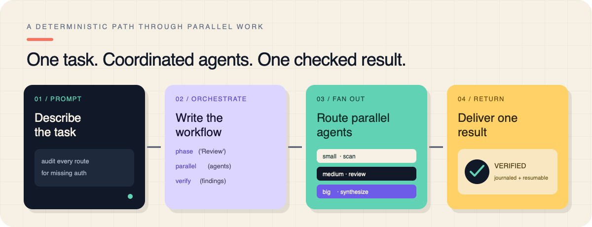

›src/routes/**/*.ts
Multi-agent orchestration for Pi
One prompt.A whole team.
Pi writes a deterministic JavaScript workflow, routes work across isolated subagents, cross-checks what they find, and returns one answer—without flooding your context.
pi install npm:@quintinshaw/pi-dynamic-workflows
✓verified · journaled
The orchestration is visible
A deterministic path through parallel work.
The parent writes the plan. Fresh subagent sessions do the noisy work. A final pass verifies the result. Every completed call is journaled, so a resumed run only executes what changed.

Real run, not a mockup
Keep working while the fleet runs.
Workflows start in the background. The live panel shows what is running, which model it uses, fresh and cached tokens, cost, and throughput. The conversation continues automatically when the result lands.
- Compact or per-agent progress views
- Pause, resume, stop, restart, and save
- Inspect prompts, results, failures, and compact history
Quickstart
From install to fan-out in one minute.
01
Install and reload
Install the Pi package, then run /reload once.
02
Ask naturally
Include “workflow” in your request, or force one with /workflows run.
03
Watch or move on
Track the live run or keep chatting. The final result comes back automatically.
auth-audit.workflow.jsdeterministic
export const meta = { name: 'auth_audit', phases: ['Scan', 'Review', 'Verify'], } phase('Scan') const files = await agent( 'List every route file.', { tier: 'small' }, ) phase('Review') const findings = await parallel( files.map(file => () => agent( `Audit ${file} for missing auth.`, { tier: 'medium', isolation: 'worktree' }, )), ) phase('Verify') return await agent( 'Double-check these findings:\n' + findings, { tier: 'big' }, )
Production pieces included
Fan-out is the start, not the whole product.
A real run needs isolation, routing, visibility, recovery, and explicit quality gates. They are all built into the same workflow runtime.
Route every job to the right model.
Use small, medium, and big tiers—or pin an exact provider, model, and thinking level.
small medium big
Resume without paying twice.
Finished calls replay from the journal. Only the changed call and everything after it run again.
Worktree isolation
Parallel agents can edit the same repository without clobbering one another.
↗Measured usage
See fresh and cached tokens, cost, and live tok/s from real sessions—not guesses.
$Quality patterns
verify(), judgePanel(), loopUntilDry(), and completenessCheck().
Ready-made workflows
Use the runtime—or start with a proven pattern.
The package ships with commands for research, review, multi-perspective analysis, and exhaustive codebase checks.
/deep-research
Web-researched, source-cross-checked reports with citations.
/adversarial-review
Findings investigated, challenged, and reconciled by skeptical reviewers.
/code-review
Seven parallel finder angles, deduplication, verification, and a ranked report.
/ultracode
A standing opt-in that automatically arms an exhaustive workflow for substantive work.
Operational clarity
Power when you need it. Quiet defaults when you do not.
Runs are backgrounded, sessions stay in memory, and budgets and timeouts remain unbounded unless you explicitly set them.
/workflows/workflows-models/workflows-progress/workflows-trigger/effort/ultracode
Can I control cost and concurrency?
Yes. Set run, phase, or per-agent budgets; choose concurrency up to 16; and route inexpensive work to a small tier. Defaults remain uncapped until you opt in.
Can agents modify code safely in parallel?
Use isolation: "worktree". Each agent receives a throwaway git worktree and branch, so overlapping edits do not overwrite one another.
What happens after a restart?
The journal survives. Resume the run and completed calls replay instantly; only the changed or unfinished suffix executes.
Where is workflow state stored?
Global settings live under ~/.pi/workflows; project runs, journals, locks, and saved overrides live in a project namespace beneath it.
Can I inspect a failed subagent?
Open /workflows and drill from run to phase to agent. The detail view shows model, prompt, result, failure diagnostics, and compact tool history.
Give the next big task a whole team.
Install once, reload Pi, then ask for a workflow in plain language.
pi install npm:@quintinshaw/pi-dynamic-workflows